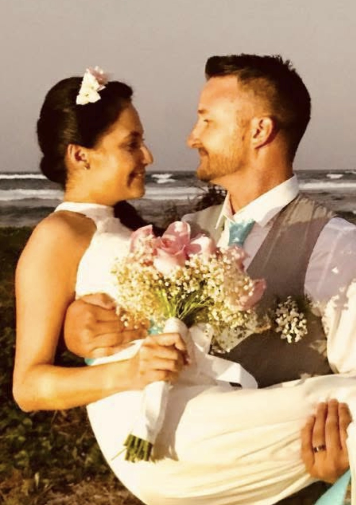

Their Journey
The Story
Love at First Swipe
He had seven matches. She had a thousand. His first message got buried. About to quit the app, he sent one last round — a shot in the dark. She'd just cleared her inbox. His was the only one left. She clicked because of a sea lion kissing his cheek and a dog named Thunder on his back.
Six weeks of Skype before she'd agree to meet. Their first date was supposed to be TopGolf — six-hour wait — so they ended up at World of Beer. Neither of them drinks beer. Then karaoke. He sang. He pulled her up to dance. She hated all of it. After that night, they were together every day. Married five months later.
.png)
Five months from the first date to tying the knot
Year One
His company shut down without warning. They were newly married, living with his sisters, eating chicken and potatoes every night. His father passed away at fifty-eight — they weren't close, but the loss left a quiet weight. The silver coins he left behind? Josh's siblings gave their share so Josh and Laura could hire an immigration lawyer.
By the end of that year, he'd found the best job of his life. All the way down, all the way up — in twelve months.
.png)
Through every storm, side by side
.png)
The view is better when you've earned it
Thunder, Rain & Lightning
His dog was Thunder — red fur, golden eyes, his best friend since his brother left for Iraq. Her dog was Lluvia — Rain in Spanish — a German Shepherd she'd had since she was nine. Thunder and Rain. It felt like a sign before they even understood it.
They flew to Colombia so Josh could meet Laura's mom. He met Lluvia too — seventeen years old, near the end. Shortly after they came home, she was gone. When the grief softened, they got a fearless little cat and named him Rayo — Lightning. Thunder, Rain, and Lightning. The storm family.

An island in Colombia, five months after the first date
The Highs and the Heartbreaks
A dream house with twenty-one-foot ceilings, sold to them by an eighty-year-old widow who wanted a couple like them to have it. Laura becoming a citizen the same month — celebrated with a rooftop party and a gloriously trashy American one with mullet wigs and flag onesies.
Then Thunder laid down and couldn't get up. River searched the house for him for days.
Laura failed the vet licensing exam — twice. One attempt left. A car accident. A tumor. On her third and final try, she passed. She became the doctor she'd crossed a continent to be.
Ten Years
Dr. Anthony — the vet who gave Laura her first American job, who believed in her first — got years he wasn't supposed to have. In year ten, he was gone. Laura barely made it to his room in time.
Now they're renewing their vows on a beach in Puerto Rico, with seven couples who became family along the way. The first time, they said these words in front of the people they came from. This time, it's the people they built a life beside.
.png)
.png)
.png)